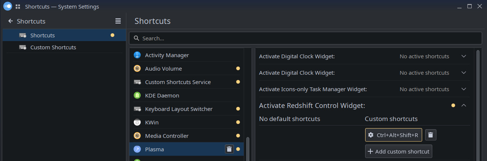

Ubuntu Studio 22.04 on Computer, for a young artist
The young artist in the house, who will soon have an upgraded PC for the new year, will be then running Ubuntu Studio 22.04, made for creative people.
The current system is running Ubuntu Studio 20.04 on a very old system, based on an AMD Phenom II X4 and an Asus M4A89GTD Pro/USB3 from 2010. In preparation for the upcoming upgrade, the process starts by installing Ubuntu Studio 22.04 on a old SSD on my own PC (Rapture), which can later be transplanted to the new PC.
Prepare 120 GB SSD in Rapture
If only out of convenience, because this disk is already in Rapture and no longer in use, we’ll install a new Ubuntu Studio 22.04.1 LTS on an old Samsung SSD 840 Basic 120GB SATA which has been working flawlessly since August 2013.
The current partition table has 3 partitions, all too small for today’s Ubuntu (for me):
# fdisk -l /dev/sde
Disk /dev/sde: 111.79 GiB, 120034123776 bytes, 234441648 sectors
Disk model: Samsung SSD 840
Units: sectors of 1 * 512 = 512 bytes
Sector size (logical/physical): 512 bytes / 512 bytes
I/O size (minimum/optimal): 512 bytes / 512 bytes
Disklabel type: dos
Disk identifier: 0x6d4c7104
Device Boot Start End Sectors Size Id Type
/dev/sde1 * 2048 83888127 83886080 40G 83 Linux
/dev/sde2 83888128 167774207 83886080 40G 83 Linux
/dev/sde3 167774208 234441647 66667440 31.8G 83 Linux
Previous systems in this disk are Ubuntu Studio 20.04 on
/dev/sde1 (/) and /dev/sde3 (/usr) because it
wouldn’t fit in /dev/sde1 alone;
and Ubuntu 18.04 in /dev/sde2.
# df -h
Filesystem Size Used Avail Use% Mounted on
/dev/sde3 32G 18G 13G 59% /media/ponder/… (Ubuntu 20.04 /)
/dev/sde2 40G 27G 13G 68% /media/ponder/… (Ubuntu 18.04 /)
/dev/sde1 40G 29G 8.6G 78% /media/ponder/… (Ubuntu 20.04 /usr)
First, back these up to the old RAID1 in Rapture, using a
small script backup-root-fs to keep track of all the
--exclude flags:
#!/bin/bash
src=$1
dst=$2
time rsync \
-avxHAX \
--progress \
--numeric-ids \
--exclude="$src/dev" \
--exclude="$src/proc" \
--exclude="$src/sys" \
--exclude='/dev' \
--exclude='/proc' \
--exclude='/sys' \
$src $dst
Used this script to backup all the old Ubuntu Studio's partitions:
# /root/backup-root-fs \
/media/ponder/518be5a3-5c8c-4674-a4b1-bebf455dc61f/@/ \
/home/raid/backups/ubuntu-18.04/
# /root/backup-root-fs \
/media/ponder/498381d9-71e8-4941-a682-e37302da5392/ \
/home/raid/backups/ubuntu-20.04/
# rm -f /home/raid/backups/ubuntu-20.04/usr
# mkdir /home/raid/backups/ubuntu-20.04/usr
# /root/backup-root-fs \
/media/ponder/f8f7aee8-e172-4eda-bf9e-962dbfb51331 \
/home/raid/backups/ubuntu-20.04/usr/
Both Ubuntu 20.04 and 22.04 take about 45 GB in their roots:
# du -sh /home/raid/backups/ubuntu-*
27G /home/raid/backups/ubuntu-18.04
46G /home/raid/backups/ubuntu-20.04
# df -h
Filesystem Size Used Avail Use% Mounted on
tmpfs 3.2G 2.4M 3.2G 1% /run
/dev/nvme0n1p2 50G 44G 3.2G 94% /
Rather than spend hours trying to delete unused clutter, because there is no longer enough unused clutter that it would make a dent in disk usage, we need to plan for bigger root filesystems in the new partition schema.
Assuming a root filesystem of at least 45 GB, make that 50 GB, set that as the 70% (or less) of desired partition size (use the 70/30 rule to optimize your system to keep SSDs speedy), which means at least 71.42 GB, make that 75 GB or more.
In the new 2000 GB m.2 SSD in Rapture, that’d mean converting the 3 50 GB partitions into 2 75 GB partitions, which is necessarily a destructive change for all partitions. Luckily the current system root is on the first of the 3, so we can start by replacing the other 2 with a 75 GB partition, and possibly enlarging the root filesystem later with parted on a USB stick.
In the old 120 GB SSD for Computer, we could get away with 2 60 GB partitions, which would be slightly smaller, but there is a newer 250 GB SSD in Computer we can use later for a future system’s root filesystem, so we might as well take the whole disk with now.
Create a 250 MB EFI partition, just in case this disk is moved to an EFI-capable system.
# umount /media/ponder/518be5a3-5c8c-4674-a4b1-bebf455dc61f
# umount /media/ponder/f8f7aee8-e172-4eda-bf9e-962dbfb51331
# umount /media/ponder/498381d9-71e8-4941-a682-e37302da5392
# fdisk /dev/sde
…
Disk /dev/sde: 111.79 GiB, 120034123776 bytes, 234441648 sectors
Disk model: Samsung SSD 840
Units: sectors of 1 * 512 = 512 bytes
Sector size (logical/physical): 512 bytes / 512 bytes
I/O size (minimum/optimal): 512 bytes / 512 bytes
Disklabel type: dos
Disk identifier: 0x6d4c7104
Device Boot Start End Sectors Size Id Type
/dev/sde1 2048 514047 512000 250M 83 Linux
/dev/sde2 * 514048 234441647 233927600 111.5G 83 Linux
Install Ubuntu Studio 22.04 (in Rapture)
Prepared the USB stick with usb-creator-kde and booted into
it, then used the “Install Ubuntu” launcher on the desktop.
- Boot from USB, with the option to Try or Install Ubuntu
- Select language (English) and then Install Ubuntu
- Select time zone and keyboard layout.
- Select Type of install: Ubuntu Server (not minimized)
- For Storage configuration select Custom storage layout
- Select storage device: Samsung SSD 840 Series 120 GB and then Erase disk.
- Boot loader location: MBR on /dev/sdd (120 GB SSD) ─ not on another disk!
- Create partition 1 (250 MB) as EFI System Partition mounted on
/boot/efi - Create partition 2 (111.55 GiB) ext4 mounted on
/ - Select Install Now to confirm the partition selection.
- Confirm first non-root user name (
ponder) and computer name (computer). - Once it's done, select Restart
(remove install media and hit
Enter).
Note: while this SSD is in Rapture, booting into this new system requires selecting the 120 GB disk in the BIOS boot menu (F8 / F10).
NVidia drivers
With the new kernel running, bring the system up to date with all the updates and install NVidia drivers:
# apt update
# apt dist-upgrade
# apt install gkrellm nvidia-settings nvidia-driver-520 xserver-xorg-video-nvidia-520 -y
Install Software
APT packages
The first thing I like to do is installing everything that is easily to install with APT:
# apt install gdebi-core wget gkrellm vim curl gkrellm-hdplop gkrellm-x86info gkrellm-xkb gkrellm-cpufreq geeqie \
playonlinux exfat-fuse clementine id3v2 htop vnstat neofetch tigervnc-viewer xcalib scummvm wine gamemode \
python-is-python3 exiv2 python3-selenium sox speedtest-cli python3-pip netcat rename scrot jstest-gtk etherwake \
lm-sensors sysstat ttf-mscorefonts-installer ttf-mscorefonts-installer:i386 tigervnc-tools winetricks \
icc-profiles tor unrar iotop-c xdotool redshift-gtk inxi vainfo vdpauinfo ffmpeg mpv screen -y
# apt -y autoremove
Google Chrome
Installing Google Chrome is as simple as downloading the Debian package and installing it:
Steam
Installing the Steam client requires first installing several
i386 (32-bit) libraries:
# apt install libgl1-mesa-glx:i386 libc6:amd64 libc6:i386 libegl1:amd64 libegl1:i386 libgbm1:amd64 libgbm1:i386 \
libgl1-mesa-dri:amd64 libgl1-mesa-dri:i386 libgl1:amd64 libgl1:i386 steam-libs-amd64:amd64 steam-libs-i386:i386 -y
With those installed, one can download steam_latest.deb from
store.steampowered.com/about
and install it with gdebi:
Minecraft
The Minecraft_staging.deb launcher
no longer works, because it only allows trying to log in with
Mojang accounts, and those have been deprecated.
This was very unexpected, given how the
Alternative Download Options for Minecraft: Java Edition
still points to the old
Minecraft.deb
and a recent article on how to
Install Minecraft on Ubuntu 22.04
still presents this option as viable.
The only method that proved successful to install Minecraft:
Java Edition was to copy /usr/bin/minecraft-launcher from
the previous system, from a backup in lexicon:
lexicon:~/computer-backup$ md5sum \
usr/bin/minecraft-launcher \
usr/share/applications/minecraft-launcher.desktop \
usr/share/icons/hicolor/symbolic/apps/minecraft-launcher.svg
5d0a29a858de070384fcbe84540fcdc9 usr/bin/minecraft-launcher
af82416995d92945ad5e6a24ac23f503 usr/share/applications/minecraft-launcher.desktop
1afb79bae5991dfdd73d15a3e2bbd731 usr/share/icons/hicolor/symbolic/apps/minecraft-launcher.svg
With this, plus personal files, Minecraft should be playable.
To test this (and everything else) before moving the 120 GB SSD to Computer, copy most of /home/artist (except Steam games) to Rapture and mount its /home partition:
# Rapture /home is on /dev/nvme0n1p5
UUID=18238846-d411-4dcb-af87-a2d19a17fef3 /home btrfs defaults 0 2
# Computer /home is on /dev/sdc2
#UUID=3accdc44-232e-4924-a99f-019427900938 /home btrfs defaults 0 2
Continuous Monitoring
To have detailed system and process monitoring, install the conmon-mt (multi-thread) script from
Continuous Monitoring.
Once it's running, go to Grafana and save a copy of the
Rapture dashboard as New Computer, then update all the
queries to filter for hostname = computer.
System Configuration
Once software is installed, further system configuration is desired to make some of it work better for certain purposes.
Logitech Trackman Marble
To enable 2-axis scrolling with the
Logitech Trackman Marble
create or edit /usr/share/X11/xorg.conf.d/10-libinput.conf
like this:
Section "InputClass"
Identifier "Marble Mouse"
MatchProduct "Logitech USB Trackball"
MatchIsPointer "on"
MatchDevicePath "/dev/input/event*"
Driver "libinput"
Option "SendCoreEvents" "true"
# Physical buttons come from the mouse as:
# Big: 1 3
# Small: 8 9
#
# This makes right small button (9) into the middle, and puts
# scrolling on the left small button (8).
#
Option "Buttons" "9"
Option "ButtonMapping" "1 8 3 4 5 6 7 9 2"
Option "ScrollMethod" "button"
Option "ScrollButton" "8"
Option "EmulateWheel" "true"
Option "EmulateWheelButton" "8"
Option "YAxisMapping" "4 5"
Option "XAxisMapping" "6 7"
EndSection
On a tangentially related note, it is also good to
forbid joystick mouse emulation when using certain
joystick-like gaming controllers. To do this,
create or edit /usr/share/X11/xorg.conf.d/50-joystick.conf
Section "InputClass"
Identifier "joystick catchall"
MatchIsJoystick "on"
MatchDevicePath "/dev/input/event*"
Driver "joystick"
Option "StartKeysEnabled" "False" #Disable mouse
Option "StartMouseEnabled" "False" #support
EndSection
SSH Server
Ubuntu Studio being a desktop distro, doesn't enable the SSH server by default, but this is very useful to adjust the system remotely at any time:
# apt install ssh -y
# sed -i 's/#PermitRootLogin prohibit-password/PermitRootLogin yes/' /etc/ssh/sshd_config
# systemctl enable --now ssh
Note: remember to copy over files under /root from
previous system/s, in case it contains useful scripts (and/or
SSH keys worth keeping under .ssh).
Multiple IPs on LAN
Connecting via Ethernet we get a DHCP lease in the same network used by the WiFi (192.168.0.0/24). To add a static IP address isolated from WiFi, set it up like this:
# ip a
1: lo: <LOOPBACK,UP,LOWER_UP> mtu 65536 qdisc noqueue state UNKNOWN group default qlen 1000
link/loopback 00:00:00:00:00:00 brd 00:00:00:00:00:00
inet 127.0.0.1/8 scope host lo
valid_lft forever preferred_lft forever
inet6 ::1/128 scope host
valid_lft forever preferred_lft forever
2: enp8s0: <BROADCAST,MULTICAST,UP,LOWER_UP> mtu 1500 qdisc mq state UP group default qlen 1000
link/ether 60:45:cb:a0:16:7b brd ff:ff:ff:ff:ff:ff
inet 192.168.0.31/24 brd 192.168.0.255 scope global dynamic noprefixroute enp8s0
valid_lft 80045sec preferred_lft 80045sec
inet6 fe80::495e:55c0:ed37:9a21/64 scope link noprefixroute
valid_lft forever preferred_lft forever
3: enx70b5e8f62f4d: <NO-CARRIER,BROADCAST,MULTICAST,UP> mtu 1500 qdisc fq_codel state DOWN group default qlen 1000
link/ether 70:b5:e8:f6:2f:4d brd ff:ff:ff:ff:ff:ff
4: wlp6s0: <NO-CARRIER,BROADCAST,MULTICAST,UP> mtu 1500 qdisc noqueue state DOWN group default qlen 1000
link/ether a0:f3:c1:1d:71:b0 brd ff:ff:ff:ff:ff:ff
We only need to get the DNS add them with the 2nd IP:
# resolvectl status
Global
Protocols: -LLMNR -mDNS -DNSOverTLS DNSSEC=no/unsupported
resolv.conf mode: stub
Link 2 (enp8s0)
Current Scopes: DNS
Protocols: +DefaultRoute +LLMNR -mDNS -DNSOverTLS DNSSEC=no/unsupported
Current DNS Server: 62.2.24.158
DNS Servers: 62.2.24.158 62.2.17.61
DNS Domain: v.cablecom.net
Link 3 (enx70b5e8f62f4d)
Current Scopes: none
Protocols: -DefaultRoute +LLMNR -mDNS -DNSOverTLS DNSSEC=no/unsupported
Link 4 (wlp6s0)
Current Scopes: none
Protocols: -DefaultRoute +LLMNR -mDNS -DNSOverTLS DNSSEC=no/unsupported
Note: additional DNS Servers found by the previous system: 62.2.24.162 62.2.17.61 62.2.24.158 62.2.17.60.
With these, we can go back to static IPs and simply add both addresses together:
# vi /etc/netplan/01-network-manager-all.yaml
# Dual static IP on LAN, nothing else.
network:
version: 2
renderer: networkd
ethernets:
enp8s0:
dhcp4: no
dhcp6: no
# Ser IP address & subnet mask
addresses: [ 10.0.0.3/24, 192.168.0.3/24 ]
# Set default gateway
routes:
- to: default
via: 192.168.0.1
nameservers:
# Set DNS name servers
addresses: [62.2.24.158, 62.2.17.61]
Apply the changes with netplan apply ─ there may be a warning, but it works:
# netplan apply
# ip a
…
2: enp8s0: <BROADCAST,MULTICAST,UP,LOWER_UP> mtu 1500 qdisc mq state UP group default qlen 1000
link/ether 60:45:cb:a0:16:7b brd ff:ff:ff:ff:ff:ff
inet 10.0.0.2/24 brd 10.0.0.255 scope global enp8s0
valid_lft forever preferred_lft forever
inet 192.168.0.9/24 brd 192.168.0.255 scope global enp8s0
valid_lft forever preferred_lft forever
inet6 fe80::495e:55c0:ed37:9a21/64 scope link noprefixroute
valid_lft forever preferred_lft forever
…
Wake-on-LAN
First, confirm Wake up on PCI event is enabled in the BIOS, then enable it in the NIC:
# apt install ethtool -y
# ethtool -s enp8s0 wol g
# ethtool enp8s0 | grep -i wake
Supports Wake-on: pumbg
Wake-on: g
Note: issuing this command is required after each boot.
The system's networking is configured via netplan, so we need
to add the ethtool -s <NIC> wol g command to a script
under /etc/networkd-dispatcher/configure.d/, e.g.
50-enable-wol
Now the wake-on-LAN remains enabled in the NIC even after shutdown. This is a bit futile because the PC is plugged to a power extension that gets turned off overnight and even during the day, and when power is cut off from the PSU the WOL setting is lost.
Make SDDM Look Good
Ubuntu Studio 22.04 uses Simple Desktop Display Manager (SDDM) (sddm/sddm in GitHub) which is quite good looking out of the box, but I like to customize this for each computer.
For most computers my favorite SDDM theme is Breeze-Noir-Dark, which I like to install system-wide:
Note: action icons won’t render due to the different
directory name, need to change the directory name in the
iconSource fields in Main.qml to make them all lowercase
so icons show up.
Other than installing this theme, all I really change in it
is the background image, e.g. assuming it's downloaded as
/tmp/background.jpg
# mv /tmp/background.jpg /usr/share/sddm/themes/breeze-noir-dark
# mv /tmp/ponyo.jpg /usr/share/sddm/themes/breeze-noir-dark
# cd /usr/share/sddm/themes/breeze-noir-dark
# vi theme.conf
background=/usr/share/sddm/themes/breeze-noir-dark/background.jpg
# vi theme.conf.user
background=background.jpg
Note: it appears that this only works when the background image is specified in theme.conf.user and is stored in the theme’s directory.
Make SDDM Listen to TCP
By default, SDDM launches X.org with -nolisten tcp for
security reasons. To override this, set the flag under the
[X11] section in /etc/sddm.conf.d/kde_settings.conf
Then add a short script to authorize connections from localhost to the user (artist) session, e.g. as
~/bin/xhost-localhost
This allows an SSH session for the user (artist) to send messages to the screen with zenity:
User-specific Settings
Once the system is generally ready, a Personal Computer naturally requires additional settings and software specific to the user/s who will use it the most.
RedShift
Redshift adjusts the color temperature of your screen according to your surroundings. This may help your eyes hurt less if you are working in front of the screen at night.
More importantly, blue light can affect your sleep, because exposure to blue light before bedtime can disrupt sleep patterns as it affects when our bodies create melatonin.
This is why redshift-gtk was already installed as part of
the first APT packages. What is left to do
for a full customization is to adjust the color temperature
values and manual location in ~/.config/redshift.conf
[redshift]
temp-day=5500
temp-night=4500
gamma=0.6
adjustment-method=randr
location-provider=manual
[manual]
lat=47
lon=0
RedShift can be temporarily disabled and/or reset to the default values (based on the config above) by activating the Redshift Control Widget. Usually this is done by clicking on it, but it can be done through a keyboard shortcut as well which is very useful while playing video games.
Warning: adding the Redshift Control Widget to a KDE Plasma panel runs a risk of scrolling the mouse wheel on it and making the screen so dark it becomes unusuable. In case this happens, it is highly recommended to add a keyboard shortcut as follows.
My personal choice of shortcut to
Activate Redshift Control Widget is
Ctrl+Alt+Shift+R.

Note: it seems no longer necessary to manually add Redshift to the user's desktop session. Previously, it would be necessary to launch Autostart and Add Application… to add Redshift.
Wacom tablet
This young artist enjoys digital painting on Krita and even 3D sculpting on Blender, using a Wacom graphic tablet with a few buttons mapped to the Undo/Redo and Zoom In/out functions.
Note: this setup is specific to the Wacom Intuos Art Pen & Touch M South.
To make Krita work best with this, we use a Python script to listen for the Wacom tablet, so that when it is plugged in the button mapping is loaded and then Krita is launched.
This script depends on pyudev and idle for Python 3:
The script wait-for-wacom-and-launch-krita.py launches
Krita right after setting the tablet up, and supports
both 16:9 and non-16:9 screens (e.g. 3440x1440):
#!/usr/bin/python3
#
# Wait for a (specific) Wacom Intous table and map its 4 buttons to: undo, redo, zoom in/out.
# Exit (successfully or not) after mapping the buttons.
import gi
import pyudev
import socket
import subprocess
import sys
EXPECTED_ID_SERIAL = 'Wacom_Co._Ltd._Intuos_PTM'
XSETWACOM_CMD = '/usr/bin/xsetwacom'
XSETWACOM_PAD_DEV = 'Wacom Intuos PT M 2 Pad pad'
XSETWACOM_STL_DEV = 'Wacom Intuos PT M 2 Pen stylus'
XSETWACOM_MAP = list(range(10))
XSETWACOM_MAP[3] = 'key ctrl z'
XSETWACOM_MAP[1] = 'key ctrl shift z'
XSETWACOM_MAP[8] = 'key +'
XSETWACOM_MAP[9] = 'key -'
HOST_CONFIG = {
'computer': {
'krita-cmd': '/home/artist/Desktop/.bin/krita',
},
'rapture': {
'krita-cmd': '/home/ponder/bin/krita-es',
# Adjust drawing area in 3440x1440 screen with
# xsetwacom --set "Wacom Intuos PT M 2 Pen stylus" Area
'stylus-area': '0 0 21600 9042',
},
}
def device_event(device):
id_serial = device.get('ID_SERIAL')
if device.action == 'bind' and id_serial == EXPECTED_ID_SERIAL:
total_status = 0
hostname = socket.gethostname()
config = HOST_CONFIG[hostname]
# Map PAD buttons.
for i in (1, 3, 8, 9):
xsetwacom_command = [
XSETWACOM_CMD, 'set', XSETWACOM_PAD_DEV,
'Button', str(i), XSETWACOM_MAP[i]]
print(xsetwacom_command)
status = subprocess.call(xsetwacom_command)
total_status += status
# If necessary, assign stylus area in non-16:9 screen.
if 'stylus-area' in config:
xsetwacom_command = [
XSETWACOM_CMD, 'set', XSETWACOM_STL_DEV,
'Area', config['stylus-area']]
print(xsetwacom_command)
status = subprocess.call(xsetwacom_command)
total_status += status
if total_status > 0:
status = subprocess.call([
'/usr/bin/zenity',
'--error',
'--text="Could not configure %s"' % id_serial])
sys.exit(1)
else:
status = subprocess.call([
'/usr/bin/zenity',
'--info',
'--text="Configured %s"' % id_serial])
krita_cmd = config['krita-cmd']
status = subprocess.call([krita_cmd])
sys.exit(0)
if __name__ == '__main__':
from gi.repository import GLib
context = pyudev.Context()
monitor = pyudev.Monitor.from_netlink(context)
monitor.filter_by(subsystem='usb')
observer = pyudev.MonitorObserver(monitor, callback=device_event)
observer.start()
status = subprocess.call([
'/usr/bin/zenity',
'--warning',
'--text="Plug the tablet in to continue..."'])
loop = GLib.MainLoop()
loop.run()
Scratch 3.0 in Chrome
This artist is also into visual programming with Scratch.
Scratch 2.0 was infesible to run, it was based on defunct technology (Flash) and itself deprecated in favor of web-based Scratch 3.0 ─ much better!
However, Scratch 3.0 has a tendency to crash Google Chrome.
This can be worked around by
disabling Renderer Code Integrity.
To make this easily accessible, this can be added in a
custom launcher (e.g. ~/Desktop/Scratch.desktop):
[Desktop Entry]
Name=Scratch 3.0
Comment=Scratch 3.0
Exec=/opt/google/chrome/chrome-kiosk --disable-features=RendererCodeIntegrity "https://scratch.mit.edu/projects/editor"
Icon=/home/artist/Desktop/.icons/scratch.png
Type=Application
Path=
Terminal=false
StartupNotify=false
Roccat Tools
This artist has a very peculiar mechanical keyboard: Roccat Ryos MK Pro
This keyboard has 5 keys for macros, let’s see how to make use of them…
$ sudo apt-get install gcc cmake libdbus-glib-1-dev libgtk2.0-dev libgudev-1.0-dev libx11-dev libgaminggear-dev \
lua5.3-dev liblua5.3-dev luajit libluajit-5.1-dev libtexluajit-dev -y
$ git clone https://github.com/roccat-linux/roccat-tools.git
$ cd roccat-tools/
$ mkdir build
$ cd build
$ cmake \
-DCMAKE_INSTALL_PREFIX="/usr" \
-DWITH_LUA=5.3 \
-isystem /usr/include/harfbuzz \
-DCMAKE_C_FLAGS="$(pkg-config --cflags harfbuzz)" ..
$ make
$ sudo make install
$ sudo scripts/post_install
$ sudo usermod -a -G roccat artist
$ sudo usermod -a -G roccat ponder
At this point we have to log out and back in, or reboot.
Parental Controls
Squid Proxy
This system being setup for a very young artist, responsible parenting demands that certain parts of the Wild Internet be, if not entirely unreachable, at least time-gated.
Install Squid proxy and set it up for localhost only:
acl localnet src 10.0.0.0/8 # RFC1918 possible internal network
acl SSL_ports port 443
acl Safe_ports port 80 # http
acl Safe_ports port 21 # ftp
acl Safe_ports port 443 # https
acl Safe_ports port 70 # gopher
acl Safe_ports port 210 # wais
acl Safe_ports port 1025-65535 # unregistered ports
acl Safe_ports port 280 # http-mgmt
acl Safe_ports port 488 # gss-http
acl Safe_ports port 591 # filemaker
acl Safe_ports port 777 # multiling http
acl CONNECT method CONNECT
http_access deny !Safe_ports
http_access deny CONNECT !SSL_ports
http_access allow localhost manager
http_access deny manager
http_access allow localhost
http_access deny all
http_port 3128
coredump_dir /var/spool/squid
refresh_pattern ^ftp: 1440 20% 10080
refresh_pattern ^gopher: 1440 0% 1440
refresh_pattern -i (/cgi-bin/|\?) 0 0% 0
refresh_pattern (Release|Packages(.gz)*)$ 0 20% 2880
refresh_pattern . 0 20% 4320
Block YouTube
This section shows how to block YouTube because that is the one site that contains most domains. The same setup can be used to block simpler sites, and it is useful to have this setup replicated for each site as needed.
To block the site, create a file with the rules in wiki.squid-cache.org/ConfigExamples/Streams/YouTube, updated here to reflect the latest YouTube embed URL pattern. To allow the site, create a file with just a comment.
For each site to block/allow, create a dedicated directory:
In this directory, create a file (e.g. no-youtube.conf) with
the necessary rules:
# Blocking YouTube Videos
# https://wiki.squid-cache.org/ConfigExamples/Streams/YouTube
## The videos come from several domains
acl youtube_domains dstdomain .youtube.com .googlevideo.com .ytimg.com
## G* services authentication domain
acl google_accounts dstdomain accounts.youtube.com
http_access deny youtube_domains !google_accounts
## Block YT clips
acl yt_clips url_regex .youtube\.com\/embed\/
http_access deny yt_clips
Create also a file (e.g. yes-youtube.conf) with just a
comment, this will simply not block anything:
In the main Squid config file, include what will be a symlink to either of the above:
Add an include rules at the end of /etc/squid/squid.conf
# INSERT YOUR OWN RULE(S) HERE TO ALLOW ACCESS FROM YOUR CLIENTS
include /etc/squid/conf.d/*.conf
# Blocking (or not) YouTube Videos
include /etc/squid/conf.d/youtube/youtube.conf
To quickly alternate between the two states, create two scripts:
/root/bin/youtube-disable
#!/bin/bash
ln -sf /etc/squid/no-youtube.conf /etc/squid/youtube.conf
/usr/sbin/squid -k reconfigure
/root/bin/youtube-enable
#!/bin/bash
ln -sf /etc/squid/yes-youtube.conf /etc/squid/youtube.conf
/usr/sbin/squid -k reconfigure
Squid Analyzer
Squid Analyzer is useful to get a sense of what parts of the Internet are begin requested, whether allowed or blocked.
-
Download from squidanalyzer.darold.net
-
Unpack and apply changes in commit 616d742
-
Build Debian and install package
-
Setup
crontabas per squidanalyzer.darold.net -
Authorize other PCs to visit, by adding this to
/etc/apache2/conf-available/squidanalyzer.conf
Kioskify browsers
To keep the youngest using the above Proxy and also not going astray by opening new tabs on arbitrary URLs, replace all web browser binaries with scripts that launch them with specific flags to - enable Kiosk mode - always start at a chosen URL - force traffic through the local Proxy
Google Chrome
This method to kioskify a browser consists of
- renaming the original browser binary
- replace it with a launcher script
- ensure the process applies only to the original binary
To this effect, run
/opt/google/chrome/kioskify-google-chrome
every minute:
#!/bin/bash
# Works only on a specific installation path.
cd /opt/google/chrome || exit 1
# Works only if the 'chrome' file is an ELF executable.
file chrome | grep -q ELF || exit 0
# Rename chrome as chrome-normal
if [ ! -f backup-chrome ]
then
cp -fv chrome backup-chrome
fi
mv -fv chrome chrome-normal
# Create chrome-kiosk
(cat << __EOF__
#!/bin/bash
exec /opt/google/chrome/chrome-normal \\
--kiosk \\
--proxy-server="127.0.0.1:3128" \\
\$*
__EOF__
)>chrome-kiosk
chmod +x chrome-kiosk
grep -v kiosk chrome-kiosk > chrome-no-kiosk
chmod +x chrome-no-kiosk
# Create chrome (sink to fixed URL)
(cat << __EOF__
#!/bin/bash
exec /opt/google/chrome/chrome-kiosk https://www.anton.app/de
__EOF__
)>chrome
chmod +x chrome
This can be run every minute, to immediately kioskify each new browser version as soon as it's installed:
Crontab Playtime
$ crontab -l
# m h dom mon dow command
* 12 * * 6,7 /home/artist/Desktop/.bin/restore .edu .fun
* 18 * * 1,2,3,4,5 /home/artist/Desktop/.bin/restore .edu .fun
00 20 * * * /home/artist/Desktop/.bin/restore
Crontab Bedtime
Everybody has a natural tendency to stay in front of their computer, or other entertaining devices, for longer than is good for them. This can be very detrimental when it impacts sleep pattners, to avoid this this computer will shut down on a regular schedule:
# crontab -l | grep -i 'shut.*down'
# Shut down at 20:30 (Sun-Thu)
00 20 * * 0-4 ssh pi@pi-f1 "bin/half-life-vox-say buzwarn warning _comma computer will shut down in thirty minutes"
10 20 * * 0-4 ssh pi@pi-f1 "bin/half-life-vox-say buzwarn warning _comma computer will shut down in twenty minutes"
15 20 * * 0-4 ssh pi@pi-f1 "bin/half-life-vox-say buzwarn warning _comma computer will shut down in fifteen minutes"
20 20 * * 0-4 ssh pi@pi-f1 "bin/half-life-vox-say buzwarn warning _comma computer will shut down in ten minutes"
25 20 * * 0-4 ssh pi@pi-f1 "bin/half-life-vox-say buzwarn warning _comma computer will shut down in five minutes"
26 20 * * 0-4 ssh pi@pi-f1 "bin/half-life-vox-say buzwarn warning _comma computer will shut down in four minutes"
27 20 * * 0-4 ssh pi@pi-f1 "bin/half-life-vox-say buzwarn warning _comma computer will shut down in three minutes"
28 20 * * 0-4 ssh pi@pi-f1 "bin/half-life-vox-say buzwarn warning _comma computer will shut down in two minutes"
29 20 * * 0-4 ssh pi@pi-f1 "bin/half-life-vox-say buzwarn final warning _comma computer will shut down in sixty seconds"
30 20 * * 0-4 /sbin/shutdown -h now
# Shut down at 21:30 (Fri-Sat)
30 20 * * 5-6 ssh pi@pi-f1 "bin/half-life-vox-say buzwarn warning _comma computer will shut down in thirty minutes"
40 20 * * 5-6 ssh pi@pi-f1 "bin/half-life-vox-say buzwarn warning _comma computer will shut down in twenty minutes"
45 20 * * 5-6 ssh pi@pi-f1 "bin/half-life-vox-say buzwarn warning _comma computer will shut down in fifteen minutes"
50 20 * * 5-6 ssh pi@pi-f1 "bin/half-life-vox-say buzwarn warning _comma computer will shut down in ten minutes"
55 20 * * 5-6 ssh pi@pi-f1 "bin/half-life-vox-say buzwarn warning _comma computer will shut down in five minutes"
56 20 * * 5-6 ssh pi@pi-f1 "bin/half-life-vox-say buzwarn warning _comma computer will shut down in four minutes"
57 20 * * 5-6 ssh pi@pi-f1 "bin/half-life-vox-say buzwarn warning _comma computer will shut down in three minutes"
58 20 * * 5-6 ssh pi@pi-f1 "bin/half-life-vox-say buzwarn warning _comma computer will shut down in two minutes"
59 20 * * 5-6 ssh pi@pi-f1 "bin/half-life-vox-say buzwarn final warning _comma computer will shut down in sixty seconds"
00 21 * * 5-6 /sbin/shutdown -h now
Note: the audible warnings are played on the Raspberry Pi 4 so that they will play even if no user is logged in.
Time Tracking
Keep track of where your times goes is an on-going struggle
for everybody using computers, not just young people. Even at
work, it can be quite useful to know which tasks tend to be
the bigger time sinks. For such purposes it is useful to run
xdotool in a loop polling for the title of the active
window, which tends to correlate pretty well with the task at hand, e.g.
- name of the video game being played
- title of the video being watched (YouTube, Netflix, etc.)
- name of the file being edited (Blender, GIMP, Krita, etc.)
For this purpose, add poll-focused-window-every-second and report-daily-time-per-focused-window as login scripts to
capture a screenshot of the full screen and then make a
timelapse video of each desktop session. This will cause a
small CPU spike when logging in, but is not too noticeable
poll-focused-window-every-second
#!/bin/bash
#
# Poll every second for the name of the active window, store it in a log file.
LDIR="${HOME}/xdotool-logs"
TSTM="$(date +'%Y-%m-%d-%H-%M-%S')"
LOGF="${LDIR}/${TSTM}.txt"
mkdir -p "${LDIR}"
while true; do
# Skip if screen is locked (KDE Plasma)
if qdbus org.freedesktop.ScreenSaver /ScreenSaver org.freedesktop.ScreenSaver.GetActive 2>/dev/null |
grep -q true; then
continue
fi
wid=$(xdotool getwindowfocus -f)
if [[ -z "${wid}" ]]; then
continue
fi
wname=$(xdotool getwindowname "${wid}")
echo "${wid} ${wname}" >>"${LOGF}"
sleep 1
done
report-daily-time-per-focused-window
#!/bin/bash
#
# Analyze time spent per window for all days up to (and including) yesterday.
# Produce output in TSV format; with .csv file names for easier import in office suites.
LDIR="${HOME}/xdotool-logs"
mkdir -p "${LDIR}/tsv"
rewrite_window_name() {
echo "$1" |
sed 's/ - Google Chrome//' |
sed 's/ - Google Docs//'
}
first_window_name() {
wid=$1
logf=$2
grep "^${wid} " "${logf}" |
sed "s/^${wid} //" |
grep -Ev '^Untitled - Google Chrome$|^New Tab - Google Chrome$|^New Incognito Tab$' |
head -1
}
most_time_spent_window_name() {
wid=$1
logf=$2
grep "^${wid} *" "${logf}" |
sed "s/^${wid} //" |
grep -Ev '^Untitled - Google Chrome$|^New Tab - Google Chrome$|^New Incognito Tab$' |
sort | uniq -c | sort -nr | head -1 |
while read -r line; do
secs=$(echo "${line}" | grep -Eo '[0-9]+' | head -1)
title=$(echo "${line}" | sed "s/${secs}//")
echo "${title}"
done
}
# Find all dates (up to yesterday) missing TSV report.
today=$(date +"%Y-%m-%d")
find "${LDIR}" -name "*.txt" |
grep -o '/2...-..-..' |
sed 's/\///' |
grep -v "${today}" |
sort -u |
while read -r date; do
tsvout="${LDIR}/tsv/${date}.csv"
# Avoid re-processing existing reports.
if [[ -f "${tsvout}" ]]; then
echo "Report for ${date} already in ${tsvout}"
continue
fi
# Produce output in TSV format, leaving the 'task' column blank.
echo -e "Date\tDuration\tTask\tOpening\tMost time spent in" >"${tsvout}"
find "${LDIR}" -name "${date}-*" | while read -r logf; do
cut -f1 -d' ' "${logf}" | sort -u | grep -v '^ $' | grep -v '^$' | while read -r wid; do
secs=$(grep -c "^${wid} " "${logf}")
# Skip windows with less than 10 min.
if [[ "${secs}" -lt 600 ]]; then
continue
fi
# Find the first (not useless) title and the one with the most time.
first=$(rewrite_window_name "$(first_window_name "${wid}" "${logf}")")
mostt=$(rewrite_window_name "$(most_time_spent_window_name "${wid}" "${logf}")")
if [[ "${first}" == "${mostt}" ]]; then
mostt=""
fi
hours=0
mins=0
if [[ ${secs} -ge 3600 ]]; then
hours=$((secs / 3600))
secs=$((secs - hours * 3600))
fi
if [[ ${secs} -ge 60 ]]; then
mins=$((secs / 60))
secs=$((secs - mins * 60))
fi
echo -e "${date}\t${hours}:${mins}:${secs}\t\t${first}\t${mostt}"
done
done | sort -nr -k 2 >>"${tsvout}"
echo "Report for ${date} ready in ${tsvout}"
done
Desktop Timelapses
Having a timelapse of what has been on screen can be useful for both the young artist and their responsible parents, in fact most likely useful to showcase the artist's process through a lenghty work of digital art than to the parents to gain detailed insights into any other activities.
For either purpose, add take-a-screenshot-every-second and make-all-timelapses-from-screenshots as login scripts to
capture a screenshot of the full screen and then make a
timelapse video of each desktop session. This will cause a
small CPU spike when logging in, but is not too noticeable
since it only takes 2 or 3 CPU cores for a few minutes.
Important: make-all-timelapses-from-screenshots depends
on make-one-timelapse-from-screenshots and runs 4 instances
of it in parallel.
take-a-screenshot-every-second
#!/bin/bash
# Do not run again if already running.
p=$(pidof -x "$0")
n=$(echo "${p}" | wc -w)
if [[ "${n}" -gt 1 ]]; then
echo "Already running! (${p})"
exit 0
fi
# Where to store screenshots. Create one directory per start time.
START=$(date +"%Y_%m_%d_%H_%M_%S")
BASEDIR="${HOME}/Videos/Desktop_Timelapse"
OUTDIR="${BASEDIR}/${START}"
# Write first to the shared memory filesystem (faster).
TMPDIR="/dev/shm/${USER}/screenshot-every-second/${START}"
mkdir -p "${TMPDIR}" "${OUTDIR}"
while true; do
# Take a screenshot, but only if the screen is not locked.
if dbus-send --session --dest=org.freedesktop.ScreenSaver --type=method_call --print-reply /org/freedesktop/ScreenSaver org.freedesktop.ScreenSaver.GetActive | grep -q 'boolean false'; then
scrot "${TMPDIR}/%Y-%m-%d-%H-%M-%S.jpg"
fi
# Delay for (nearly) a second. This is so that system load is not a problem.
sleep 0.9
# Save files to final destination every minute.
if [[ $(date +'%S' | sed 's/^0//') -eq 59 ]]; then
mv -f "${TMPDIR}/*.jpg" "${OUTDIR}"
fi
done
make-all-timelapses-from-screenshots
#!/bin/bash
BASEDIR=${HOME}/Videos/Desktop_Timelapse
CWD=$(dirname "$0")
# Wait a bit in case a new directory is being created, because that is the one
# that should be ignored below.
sleep 2
# Create a timelapse from the screenshot in each directory in BASEDIR.
# Ignore the last one (presumed incomplete).
last=$(find "${BASEDIR}" -maxdepth 1 -type d -name "20*" | sort | tail -1)
find "${BASEDIR}" -maxdepth 1 -type d -name "20*" |
grep -v "${last}" |
xargs -P 4 -n 1 "${CWD}/make-one-timelapse-from-screenshots"
# Clean up discarded timelapses (zero-size videos).
find "${BASEDIR}" -maxdepth 1 -size 0 | while read -r f; do
b=$(basename "${f}")
d="${b/.avi/}"
td="${BASEDIR}/trash/${d}"
test -d "${td}" && rm -rf "${td}"
test -f "${f}" && rm -f "${f}"
done
make-one-timelapse-from-screenshots
#!/bin/bash
# Create a timelapse from the screenshot in one directory.
# At a framerate of 30 FPS; if screenshots are taken every second, 2 minutes of timelapse represents 1 hour.
# Screenshtos must be all of the same pixel size, otherwise ffmpeg will fail.
day="$1"
trash="$(dirname "${day}")/trash"
mkdir -p "${trash}"
ffmpeg -vsync 0 -framerate 30 \
-pattern_type glob -i "${day}/*.jpg" \
-b:v 5M -c:v libx264 -preset ultrafast \
-y "${day}".avi && mv -f "${day}" "${trash}"